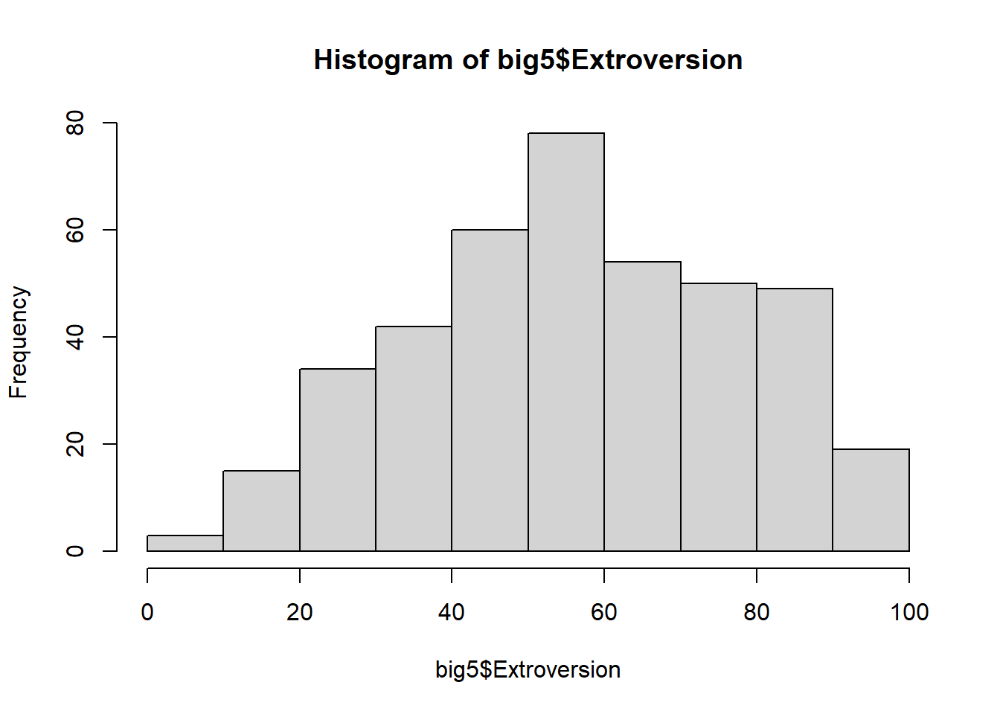
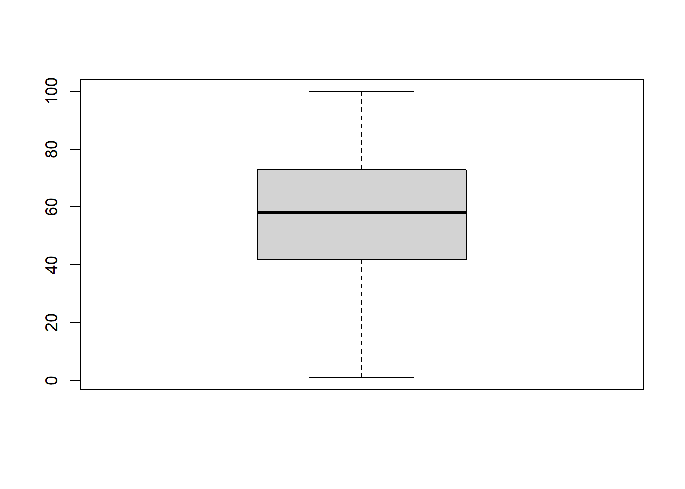

This file is created using the Markdown language. Think of Markdown like Microsoft Word on steroids. The difference is, instead of clicking through drop-down menus to change font, line spacing, etc. you need to type in the instructions inside the document.
This file has the extension .qmd which stands for Quarto Markdown. All assignments and class notes will be given as .qmd files.
The upside is that you can easily write nice looking reports and directly incorporate code output including summary tables and graphs.
The YAML
The very top of the document (between the ---) gives instructions to the computer about what kind of document to make. It is called the YAML. What YAML stands for is up for debate. But the instructions are necessary for building the document.
The one above is very basic. We may expand on it a little as the semester progresses. But for now, this document can be made into an HTML file by “Knitting” it.
Rendering the Document
Above, you should see a “Render” button. Click on it and see what happens.
We can make section headers, type text, include code chunks and stitch it all together into a decent-looking report with only a few lines of text.
This is a Section Header
This is a section subheader
sub-subheader
You get the point.
Making R Work for Us
The best thing about Markdown language is that you can include code and use output directly within the document.
We’ll first need to install libraries that we’ll be using in class. Because this is code we will not need to run more than once, I suggest copying and pasting the following into the Console:
Next we’ll see how to program in R within a text document! Hooray!
It can be done by inserting a “code chunk” using the tick mark symbol (not an apostrophe) and curly brackets. The shortkey command is:
ctrl+alt+i on a PC
cmd+alt+i on a Mac
To run a single line of code, you can press ctrl+Enter. This will run the line of code where your cursor is located.
To run the whole code chunk, you can click on the green arrow in the top right of the code chunk, or press ctrl+shift+Enter.
# Load the librarieslibrary(rio)library(mosaic)
Registered S3 method overwritten by 'mosaic':
method from
fortify.SpatialPolygonsDataFrame ggplot2
The 'mosaic' package masks several functions from core packages in order to add
additional features. The original behavior of these functions should not be affected by this.
Attaching package: 'mosaic'
The following objects are masked from 'package:dplyr':
count, do, tally
The following object is masked from 'package:Matrix':
mean
The following object is masked from 'package:ggplot2':
stat
The following object is masked from 'package:rio':
factorize
The following objects are masked from 'package:stats':
binom.test, cor, cor.test, cov, fivenum, IQR, median, prop.test,
quantile, sd, t.test, var
The following objects are masked from 'package:base':
max, mean, min, prod, range, sample, sum
── Conflicts ────────────────────────────────────────── tidyverse_conflicts() ──
✖ mosaic::count() masks dplyr::count()
✖ purrr::cross() masks mosaic::cross()
✖ mosaic::do() masks dplyr::do()
✖ tidyr::expand() masks Matrix::expand()
✖ dplyr::filter() masks stats::filter()
✖ dplyr::lag() masks stats::lag()
✖ tidyr::pack() masks Matrix::pack()
✖ mosaic::stat() masks ggplot2::stat()
✖ mosaic::tally() masks dplyr::tally()
✖ tidyr::unpack() masks Matrix::unpack()
ℹ Use the conflicted package (<http://conflicted.r-lib.org/>) to force all conflicts to become errors
library(car)
Loading required package: carData
Attaching package: 'car'
The following object is masked from 'package:purrr':
some
The following objects are masked from 'package:mosaic':
deltaMethod, logit
The following object is masked from 'package:dplyr':
recode
Load the data
In this section we introduce the “assignment operator” which is a fancy way of saying we’re going to name the things that we create. We will also show you how to read in a dataset from a web address.
The assignment operator
In R, you can make lots of different types of things called “objects” in programming speak. There are lots of different types of objects that we’ll make including data sets and graphs. When we make an object, we like to give it a name. While we can call it pretty much anything, it’s good practice to name it something with a meaningful connection to the type of object we’re making.
When we assign an object to a name, we use these characters <- together. For example, if we wanted to name a list of numbers list_of_numbers, we would type, in a code chunk, “list_of_numbers <- c(1,2,3,4,5)”, which would create an object named “list_of_numbers” that was an object containing the numbers 1-5. This is easier than it sounds, so let’s look at some examples:
bob <-c(1,2,3,4,5)# if we run "bob", R will print out the list of numbers:bob
[1] 1 2 3 4 5
The Import function
For this class, we will be using the “import” function in the “rio” library that you installed and loaded above. You can read in data from websites or from a file location on your hard drive. The process is the same.
# Using the "import" function from the 'rio' library reads in the databig5 <-import('https://raw.githubusercontent.com/byuistats/Math221D_Cannon/master/Data/All_class_combined_personality_data.csv')
All this code did was create an dataset object called big5. There are several ways to look at the object. The next code chunk will introduce you to 3. The first is to run the name by itself. This prints out the first hundred or so lines of the dataset in the Console.
Second, we can use the View() function, which opens up an Excel-like window showing the whole dataset.
Thirdly, the glimpse() function from the “tidyverse” library shows you a list of all the columns with some examples of the dataset.
Datasets usually have many columns. When we want to select one column from a dataset to summarize, we can use the $ operator. For example, if we want to look at only the scores for Extroversion, we can run the following code:
# Tying a hashtag before a line tells the computer to ignore it. This is how we make comments within a code chunk.#big5$Extroversion
Notice that if you start typing big5$ in a code chunk, a drop-down list of column names appears. Selecting a column name from the list is helpful for avoiding typos.
Summarizing Quantitative Data
Raw data are not particularly useful without some organization. Imagine a dataset with a million rows. It would be impossible to extract any meaningful patterns from browsing row by row. Some level of summarization is necessary for us to make sense of the raw data.
We can summarize data numerically and visually using graphics. In this section we will learn some basic R commands to summarize data.
Numerical Summaries
Measures of Center
Central Tendency is the attempt to describe a “typical” value. What is the typical height of college students? What is the typical price of a home? What is the typical GPA for BYU-I students?
The most common measures of central tendency are the Mean, Median and the Mode. The mean and the median are vastly more commonly used, and R makes it very easy to calculate them for quantitative data. We will talk about the Mode later when discussing discrete and count data.
The mean is the arithmetic average of the data that you are familiar with. Add all the numbers up and divide by the number of observations.
The median is the value in the dataset where 50% of the observations are above and 50% of the observations are below it.
Both of these measures are easily calculated in R:
mean(big5$Extroversion, na.rm=TRUE)
[1] 56.98267
median(big5$Extroversion, na.rm=TRUE)
[1] 58
Notice the na.rm=TRUE argument in the mean() function. When a column of data has missing values (NA’s), then the default is for a function to return NA. If we want to override the default we specify na.rm=TRUE which ReMoves the NAs.
Measures of Spread
Understanding the “typical” value of a certain variable is only part of the story. It can be very misleading by itself. We need to understand the variation in the data.
Measures of spread describe how close the observations are to the “typical” value. These measures answer questions like: how far spread out are heights of college students? Are they all very close to the “typical” value, or is there a wide range of heights?
The most common measures of variation are the Variance, Standard Deviation and Percentiles/Quartiles. The standard deviation is the square root of the variance. While the variance is mathematically useful, the standard deviation is much more commonly used because it preserves the original units of the data. The standard deviation can be thought of as the average distance values are away from the mean.
A percentile is a value which is above a specified percentage of observations. New parents are often eager to share their infant’s percentiles in weight and height. A baby in the 95th percentile for height is taller than 95% of babies in the population.
If you score in the 89th percentile on the ACT it means you scored above 89% of test takers (NOT that you scored an 89%).
Again, R makes these calculations easy:
var(big5$Extroversion, na.rm=TRUE)
[1] 445.0406
sd(big5$Extroversion, na.rm=TRUE)
[1] 21.09599
# The quantile function takes as inputs the data you want to find a percentile for and the percentile you want to calculatequantile(big5$Extroversion, .89, na.rm=TRUE)
89%
83
A very useful function from the “mosaic” library that we installed above is the favstats() function. With one line of code we can get all our favorite statistics.
favstats(big5$Extroversion)
min Q1 median Q3 max mean sd n missing
1 42 58 73 100 56.98267 21.09599 404 1
Graphical Summaries
Good visualizations are an incredibly efficient way of condensing a vast amount of information and making it easily comprehensible. In this section we’ll learn about ways to visualize a single variable.
Histograms
Histograms take a quantitative variable and divides it into equal intervals, counting up the number of data points in the data that fall in each interval.
There are 2 main functions for creating a histogram. Run both and compare.
hist(big5$Extroversion)

histogram(big5$Extroversion)
Boxplots
A boxplot is a graphical representation of the 5 number summary (minimum, 1st quartile, median/2nd quartile, 3rd quartile and the maximum). Typically, software does not include the absolute max or min, but labels some values as “outliers”.
boxplot(big5$Extroversion)

A single boxplot by itself is pretty much one of the most boring, useless charts. But these become very useful when comparing groups.
Your Turn
Using the “Conscientiousness” column from the big5 dataset:
Calculate the mean, standard deviation, and 5 number summary.